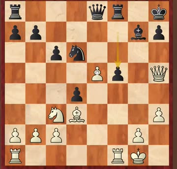
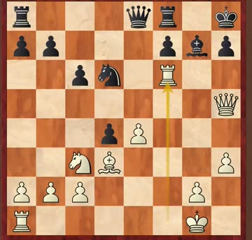
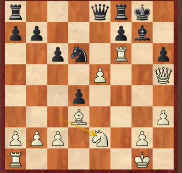
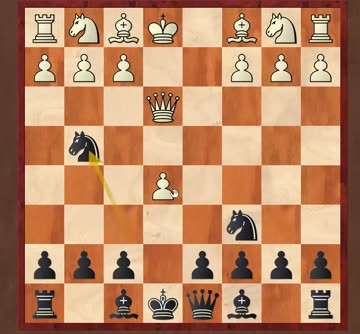
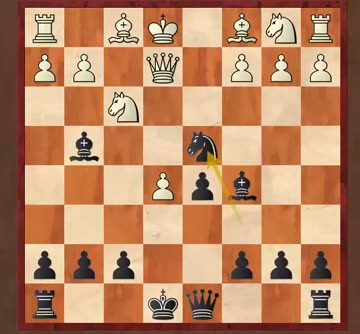
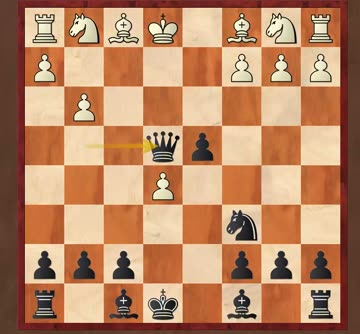

📅 Sat 12 Sep 2026👨🏫 Coach IM Li Wenliang (李文良)JJ's own Saturday class
A second coach in the room. There was a guest coach helping with the boards and keeping an eye on who was paying attention. Two students got named for chatting — worth knowing.
And the line that matters most this week. Five students got all six homework puzzles right. One of them lost the credit anyway:
“没写。没写不行，下次得写上。”
You didn't write it down. That's not good enough — write it out next time.
📅 12 Sep 2026 · class, 09:10
Getting the answer in your head doesn't count. Write the moves on the sheet.
📝 Homework 25–30 — the answers
This is the set JJ had as the hidden one. Coach went through all six, so the playable boards now show the full lines.
25 — Rd7. A quiet rook move, no check at all. Coach accepted Rf3 too — it also wins. He said Rf3 was the shorter one; the engine says the opposite (Rd7 mates in 4, Rf3 in 7), so Rd7 is the one to remember.
26 — Nb3+, then throw the queen in with Qa4+. Taking is forced and it opens the road for the bishop. “这步棋特别关键” — this is the key move.
27 — g8=Q+. The pawn becomes a queen immediately, just to drag the rook off g8.
28 — Nf5+, then a discovered check. “眼看着将杀，discover check，挡不住了” — you can see the mate coming and there's nothing to do about it.
29 — Qf8+. Give the queen away with check and the two rooks finish it.
30 — Rxh6+. Something has to come off h6; then the h-pawn joins in.
Coach's standing warning about the workload:
“李老师给你们出的 homework 只是一周的量，一天的量⋯⋯一天要做五六道题。”
The homework I set you is a week's sheet, but really it's one day's worth — you should be doing five or six problems a day.
B09 Pirc Defence, Austrian Attack · US Championship, New York, round 10 · 30 Dec 1963 · Fischer had White · 1–0
Why this game. This is round 10 of the championship Fischer won 11–0 — every single game. He had nine straight wins behind him when he sat down.
“九连胜的眼睛冒火在棋盘上，一坐下来就想赢你。所以他 passive 是正常的。”
Nine wins in a row, eyes burning at the board, sitting down wanting to beat you. No wonder his opponent played passively.
📅 12 Sep 2026 · class, 27:50
The position. Black had found a clever defence — the idea was that …f5 holds everything together, because taking on f5 would cost White the queen. Coach called the defensive idea genuinely smart. Then Fischer found the hole in it.
Before

18…exd4 — Black thinks …f5 will holdThe move

19.Rf6!! — the rook goes where it can be taken three waysAfter

20.e5 h6 21.Ne2 and Black resigned
Why Rf6 works. It isn't really a sacrifice — it's a blocker. The rook parks on f6 so that …f5 is no longer available, and the mate on h7 can't be stopped. Taking the rook loses on the spot (19…Bxf6 20.e5) and so does 19…dxc3. Black's king had to shuffle to g8, and it was over.
“你不想生 F5 吗？我送一个车给你，block，block，block。”
You want to play f5? Here, have a rook — block, block, block.
📅 12 Sep 2026 · class, 30:40
Next week: game 11 — the last one of the 11–0 run, and Coach says the hardest. It was nearly a draw and Fischer won it in the endgame.
📖 How to meet the Center Game
C22 Centre Game · this is the Black side, and it follows on from last week's Danish Gambit
What it is. White plays 1.e4 e5 2.d4 exd4 3.Qxd4, bringing the queen out on move three. Strong players do use it — it's an opening for people who like sharp, tactical positions — but the early queen is also its weakness.
“如果在开局中出后过早，你就会在开局中损失时间，因为你的皇后碰到对方的攻击，你需要 move。”
Bring the queen out too early in the opening and you lose time, because when it gets attacked you have to move it again.
📅 12 Sep 2026 · class, 35:10
Black's plan, in order:
Attack the queen every time you develop. Each attack is a free move for you.
Get the bishop out before you play d6 — play d6 first and you block your own bishop in.
White wants O-O-O and a kingside attack. Don't panic: Black develops faster.
Before

Shown from Black's side — the side you'll beThe trap

The knight jump — it looks like it's trappedAfter

Give it up on purpose, and win more back
The trap to know by heart. After 1.e4 e5 2.d4 exd4 3.Qxd4 Nc6 4.Qe3 Nf6 5.e5 Ng4 6.Qe4, the knight on g4 looks lost. The move is 6…d6! — not 6…Ngxe5?, which runs into 7.f4 and drops the knight. After 7.exd6+ Be6 8.dxc7 Qxc7 Black is much better: White has grabbed pawns and has nothing developed.
The knight is trapped, so you give it to him — yes, a sacrifice — then you take back, and you win material.
📅 12 Sep 2026 · class, 38:30
Coach also showed the main line 5.Nc3 Bb4 6.Bd2 O-O 7.O-O-O Re8 8.Qg3, and that after the alternative 8.Bc4 Black equalises with 8…d5!. He's been playing this since he was a kid.
🎯 What to take away
Write your homework answers down. Solving it in your head doesn't count — a student lost the credit for exactly this.
Five or six puzzles a day, not six a week.
A sacrifice can be a blocker. Fischer's 19.Rf6 wasn't about winning material — it was about taking …f5 away.
Against an early queen, develop with tempo. Every piece you put out should attack it.
Bishop out before d6, or you block your own bishop.
A trapped piece isn't always lost — sometimes you give it up on purpose and win more back.